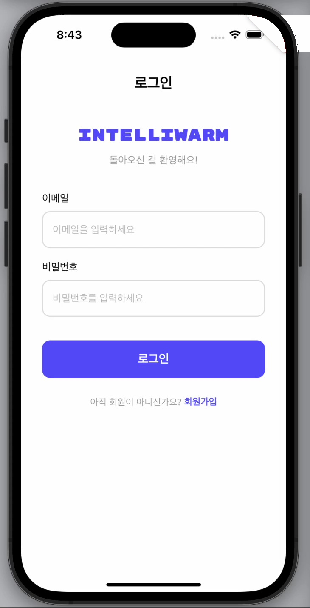
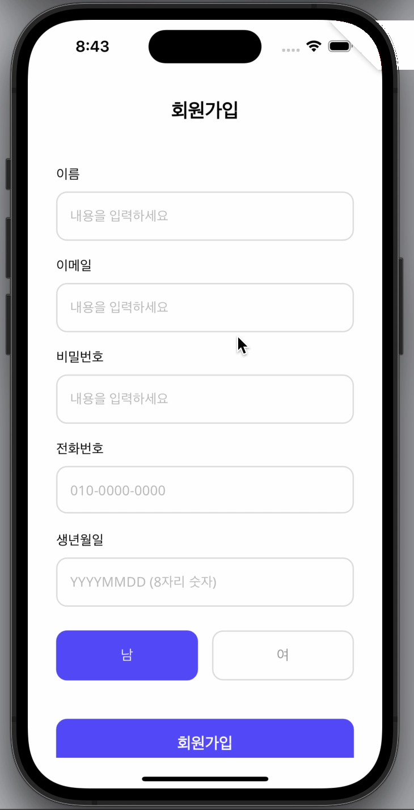
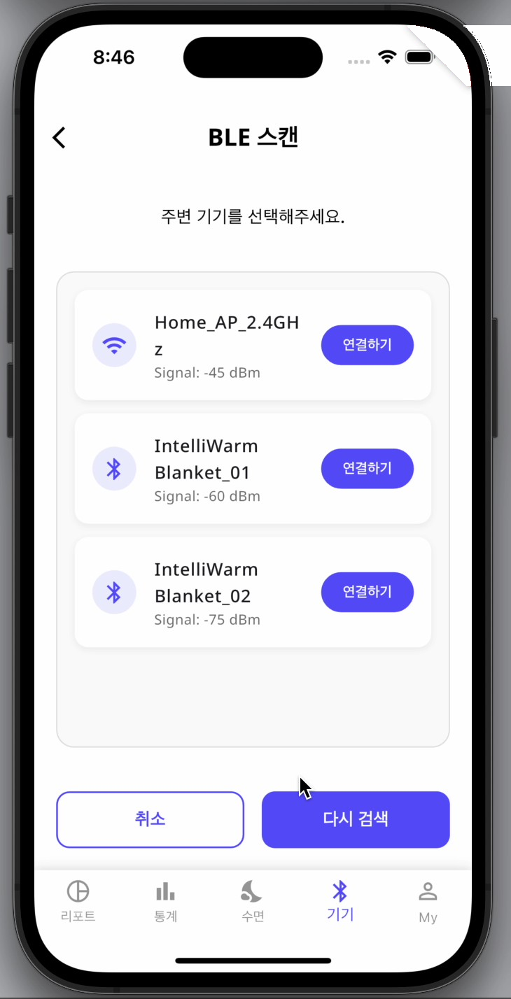
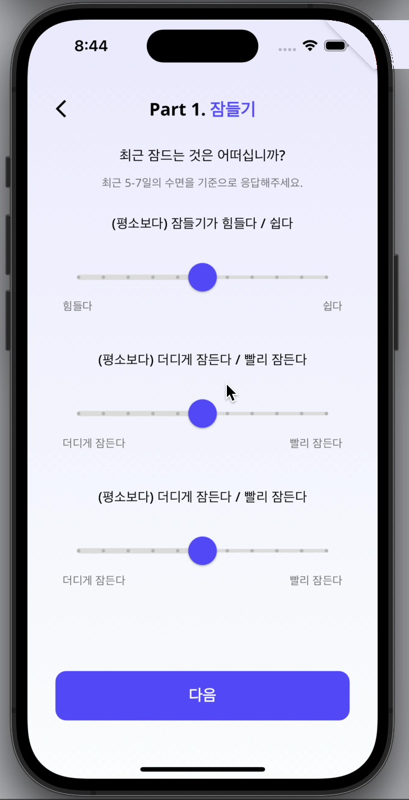
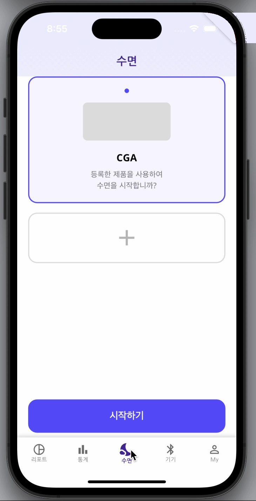
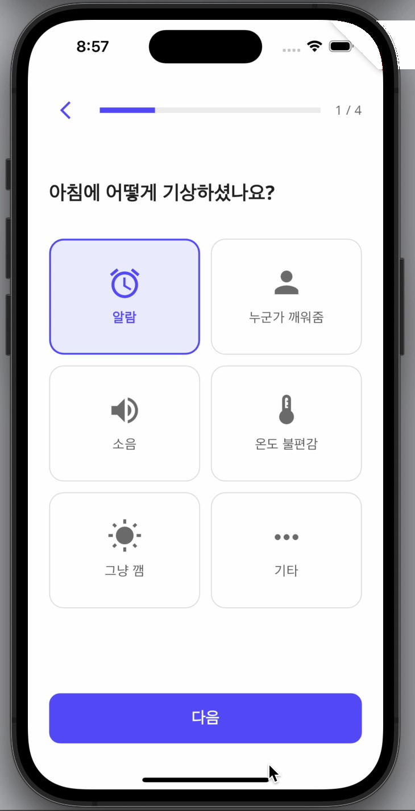
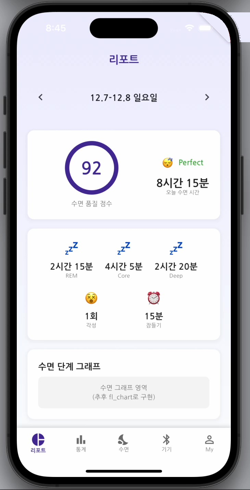
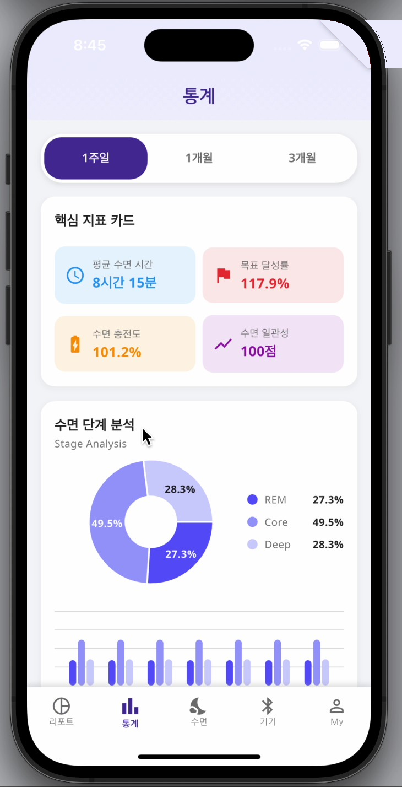
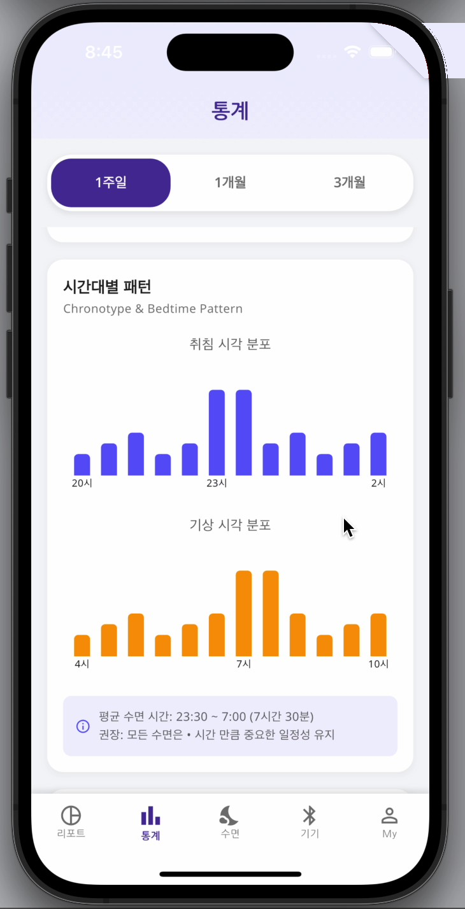

INTELLIWARM
Smart physical product · Ph.D. dissertation productization 박사논문 제품화 · Personal · 2026
A bedside device that monitors individual sleep and actively controls thermal comfort to optimize each night — the product realization of my doctoral research, “Development of a Monitoring and Temperature Control System for Optimizing Individual Sleep.” 개인의 수면을 측정하고 침상 온열 환경을 능동적으로 제어해 매일 밤의 수면을 최적화하는 침대용 디바이스입니다. 박사학위논문 「개인 수면 최적화를 위한 모니터링·온도제어 시스템 개발」을 실제 제품으로 구현한 플래그십 프로젝트입니다.

Key Features

Enhanced sleep monitoring & intelligent climate control
The device tracks sleep stages on a clear at-a-glance display, then drives intelligent climate control to keep the body in its optimal thermal window — so the user simply wakes up refreshed. 수면 단계를 측정해 한눈에 보이는 디스플레이로 보여주고, 사용자의 최적 온열 구간을 유지하도록 지능형 온도 제어를 수행합니다. 사용자는 ‘상쾌하게 깨어나는’ 결과만 경험합니다.

Form that disappears into the bedroom
A low, angled volume sits naturally beside a lamp; a single weighted dial and two hard keys replace app-dependence, so half-asleep control feels obvious in the dark. 낮고 비스듬한 형상이 스탠드 옆에 자연스럽게 놓입니다. 묵직한 다이얼 하나와 두 개의 물리 버튼으로, 잠결에도 어둠 속에서 직관적으로 조작할 수 있도록 앱 의존도를 낮췄습니다.
Designed from data

Grounded in observation, not assumption
Form and interaction decisions come from the dissertation's observation and experiment — collected sleep/environment data, feature extraction, and statistical analysis of how temperature affects sleep quality. 형상과 인터랙션은 가정이 아니라 박사연구의 관찰·실험에서 출발했습니다. 수면·환경 데이터 수집, 특징 추출, 온도가 수면의 질에 미치는 영향에 대한 통계 분석을 설계 근거로 삼았습니다.
An app that turns each night's sleep
into tomorrow's warmth
The companion app guides a short sleep survey, scores every night, visualizes sleep-stage trends, and personalizes the heating-pad level the device then automates — closing the loop between measurement and comfort. 짧은 수면 설문을 안내하고, 매일 밤을 점수화하며, 수면 단계 추이를 시각화하고, 디바이스가 자동 제어할 전기장판 단계를 개인화합니다. 측정과 온열 제어의 순환을 잇습니다.
Color
Type · Pretendard
From launch to climate control
The whole journey — onboarding, automatic sleep detection and heating, the morning survey, and reports that feed back into personalization. 앱 실행부터 온보딩 · 자동 수면 감지·온도 제어 · 기상 후 설문 · 리포트가 다시 개인화로 순환하는 전체 흐름입니다.
From sign-up to a paired device
Account, then a guided pairing flow connects the bedside device over Bluetooth. 계정 생성 후, 안내형 페어링 플로우로 침대 옆 디바이스를 블루투스로 연결합니다.



A survey that tunes the device to you
A short sleep survey and preference setup teach the system the heating-pad level and routine that fit each user. 짧은 수면 설문과 환경 설정으로, 사용자에게 맞는 전기장판 단계와 수면 루틴을 시스템이 학습합니다.



Every night, scored and explained
A nightly sleep score and stage breakdown, then weekly–monthly statistics and chronotype patterns turn data into habits. 매일 밤의 수면 점수와 단계 분석, 주·월간 통계와 수면 시간대 패턴으로 데이터를 습관으로 잇습니다.


